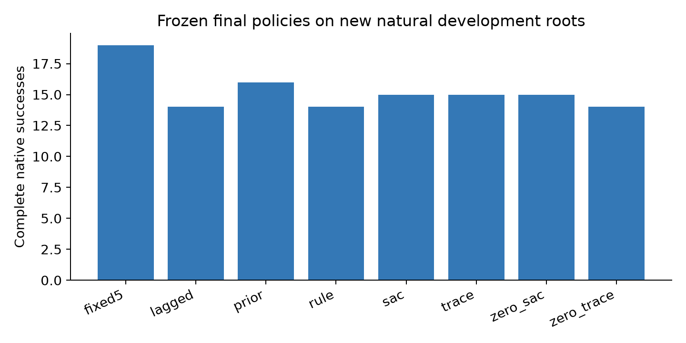
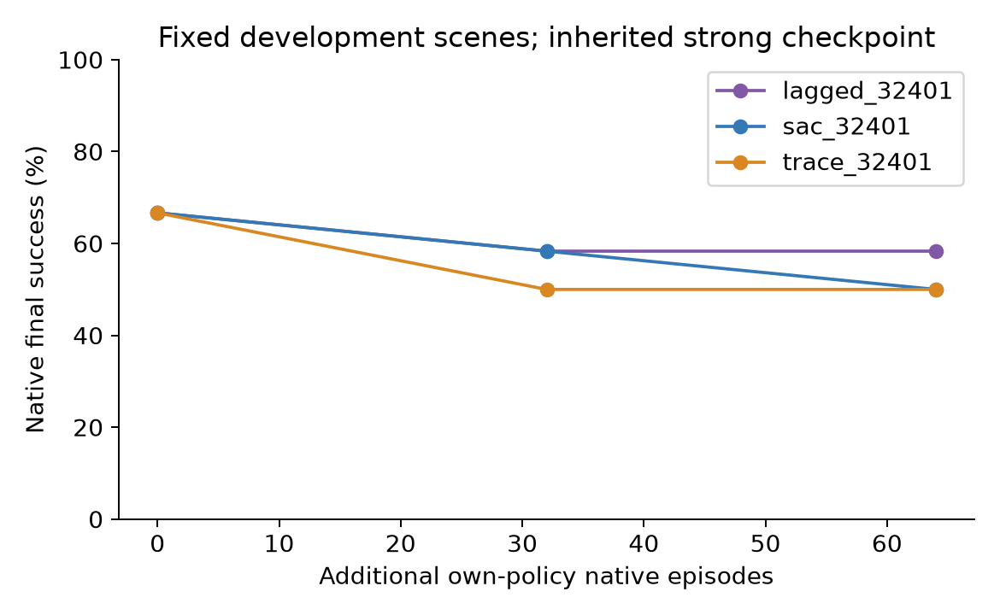
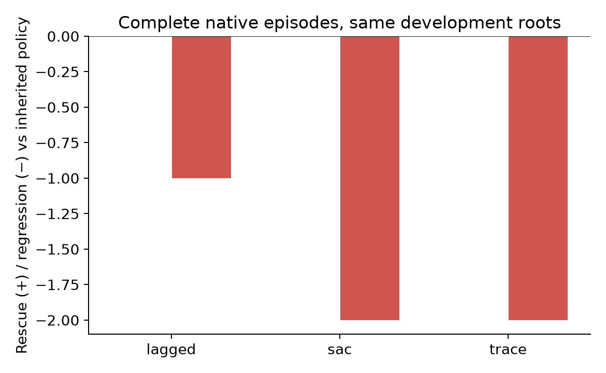
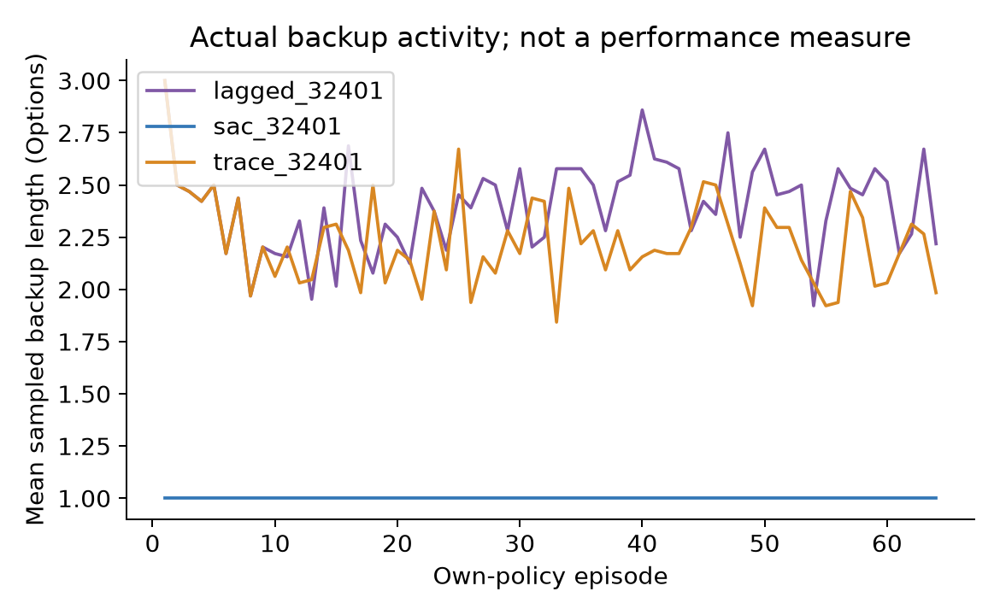

ARES SCI · PegInsertionSide-v1 · 原生100步 · 真实抓持与强共享规划 · 2026-11-08
从保留的强SAC权重和优化器继续，未退回弱初始化。标准Retrace和周期策略迭代均有成熟先例；不因更新公式或值拟合改变而宣称独立方法收益。封存测试未打开。
| 策略 | 成功 | 相对继承SAC救回 | 退化 |
|---|---|---|---|
| fixed5 | 19/24 | 3 | 0 |
| lagged | 14/24 | 0 | 2 |
| prior | 16/24 | 0 | 0 |
| rule | 14/24 | 0 | 2 |
| sac | 15/24 | 1 | 2 |
| trace | 15/24 | 0 | 1 |
| zero_sac | 15/24 | 1 | 2 |
| zero_trace | 14/24 | 0 | 2 |
训练769100–163；开发769400–411；确认769600–623。确认前固定final64与模型SHA。固定localZ−参照有一位自身动作历史，不是网络结构匹配消融。规则和固定控制不使用未来结果。

| 主臂 | 初始 /12 | 32 /12 | 64 /12 |
|---|---|---|---|
| lagged_32401 | 8 | 7 | 7 |
| sac_32401 | 8 | 7 | 6 |
| trace_32401 | 8 | 6 | 6 |


三个主臂各64次自身策略采集、2560轮Q/Actor更新。相同继承基础，不是三个独立网络初始化。
| 零熵消融 | 精确分叉32 /12 | 新增32 /12 | 原熵最终64 /12 |
|---|---|---|---|
| sac_32401 | 7 | 7 | 6 |
| trace_32401 | 6 | 6 | 6 |
仅把Bellman与Actor熵系数.01改为0，保留10%随机探索、.1成功BC及相同后32训练初态。每臂额外32次真实执行；不把分叉前32回合重复计入唯一物理成本。
保存实际Option选择概率和相邻执行边界，用截断重要性修正传播真实后续奖励；旧数据缺少行为概率时只做一步更新。候选每8个自身回合固定一次所评估的Actor版本，物理执行仍可在合法事件后再次决策。它改变价值目标及随后的Actor更新，不改变执行权限，也没有新增预测头。

769400：继承策略成功，Retrace续训后失败；32回合诊断在共同56步后产生不同修正。769401：有效首个Option被放弃；不能把所有失败都解释成“正确首次干预后的续接破坏”。记录状态上的Q排序并不等于该状态被每条部署轨迹访问。
明确标注MEASURED_STATE_REPLAY：渲染保存的真实关节/物体状态，新增物理步0；成功取自源原生执行。历史757300的100步成功见证已重新核对，不重复记作本轮实验。
769401额外3次原生执行：学习策略失败；强制首次selector6后续接学习策略成功；同一首次动作后续接继承策略成功。边界83维观测、活动队列和目标一致，记录物理前缀一致；不宣称完整隐藏PhysX状态一致。人工强制仅是机制探针，不计学习器成绩。
final64在该真实边界给selector0概率0.8645、平均Q=1.0667，selector6概率0.1011、平均Q=0.9731；与实际救回排序相反。checkpoint32曾有相反Q排序，不能把旧模型诊断冒充final64结果。队列核对 · 冻结模型数值
256次新增自身策略训练，10240轮更新；总计607次原生执行、60700物理步、5421次记录规划查询。继承数据和模型的历史成本另列；设备精确峰值未连续测量。
中文结论与下一项实验 · 原始汇总 · 复现 · 全部模型/轨迹归档SHA · 冻结协议